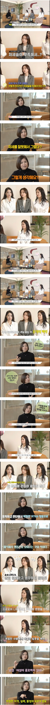

여직원은 (본인한테 영향 가는)“일”에만 관심 있다고 함
즉, 조직에 대한 이해가 부족해서
관리자 직급으로 올라가기 힘들다고 함
.
.
.
.
아니 대놓고 면전에서 처세술 ㅇㅈㄹ 시전하시면 ㅋㅋㅋㅋㅋㅋㅋㅋㅋㅋㅋㅋㅋㅋㅋㅋㅋㅋ

여직원은 (본인한테 영향 가는)“일”에만 관심 있다고 함
즉, 조직에 대한 이해가 부족해서
관리자 직급으로 올라가기 힘들다고 함
.
.
.
.
아니 대놓고 면전에서 처세술 ㅇㅈㄹ 시전하시면 ㅋㅋㅋㅋㅋㅋㅋㅋㅋㅋㅋㅋㅋㅋㅋㅋㅋㅋ
꼴랑 6명있는 좆소에서도 정치편가르기하던 차장년생각나네ㅋㅋㅋ
Mz함이 몇배로 증폭되는 느낌임
회사에서 임원달려면 개꼰대처럼 회사다녀야하는데 그러질 못하지
경험상 내느낌은
지들 기분에따라 일을 좆같이하는걸 너무함
...뭐 남자도 그럴순있어
근데 기복심한애들은 한달에한번꼴로 야랄을떨어
답답해서 내가한다, 내가해놨다가 되어야 위로올라가더라 ㅋㅋ
ㅄ같은 소리지만 결국은 모든 게 호르몬의 영향이 아닌가 싶다
사회적으로 잘 나가는 여자 임원들 보면 진짜 여자의 몸에 남성 호르몬이 가득 갖혀 있는 게 티가 남
리더가 되려면 결국은 테토여야만 하더라